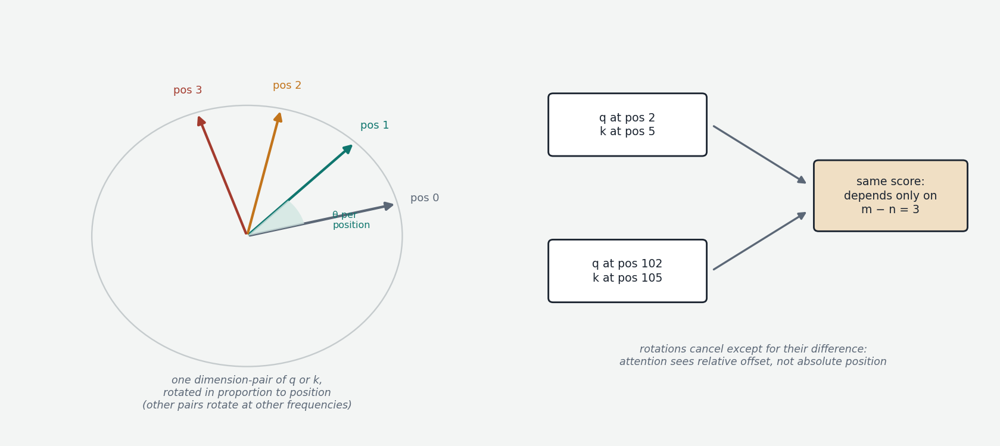

Look closely at attention as built in Chapter 00b and something is missing. A query at one position dot-products against keys at other positions — and nowhere does any token's actual position enter the computation. Position 3's key is compared to position 7's query exactly as it would be at positions 100 and 104. The dot product sees vectors; it has no idea where they came from.
This makes attention permutation-invariant: shuffle the input tokens and you get the same outputs, reshuffled. For language this is catastrophic — "the cat ate the mouse" and "the mouse ate the cat" contain the same tokens. And note that the embedding lookup (Chapter 00a) carries no position either: every "the" gets the same row of the table wherever it sits. So the question is not how to extract position from the vectors — it isn't there — but how to inject it into a system that has none.
The original solution: absolute position embeddings
The 2017 transformer paper generated a fixed vector for each position — same width as the token embeddings — from a formula of sines and cosines at different frequencies, giving each position a unique, smooth fingerprint. These were simply added to the token embeddings once, at the bottom of the network, before the first layer. The input to layer 1 became "token vector + position vector," and the rest of the model figured out what to do with the mixture. This is absolute position encoding, and it works — but with three problems. It encodes the wrong thing: language structure mostly cares about relative offsets (the verb three tokens after its subject), not absolute indices, and the model must learn that positions (5, 8) and (100, 103) share a relationship. It extrapolates badly: trained to 2,048 tokens, positions beyond 2,048 are fingerprints the model has literally never seen, and performance collapses past the trained range. And the signal is injected once at the bottom, diluting as it propagates up through dozens of layers of mixing.
RoPE: rotation as position
Rotary Position Embedding (RoPE, from the 2021 RoFormer paper by Su and colleagues) solves all three with one trick, and is now standard in essentially every modern open-weight model.

First, the picture of rotating a vector. Take a two-dimensional vector — a pair of numbers like (3, 4), an arrow from the origin. Rotating it by angle θ spins the arrow around the origin, preserving its length: a well-defined linear operation, (x, y) → (x cos θ − y sin θ, x sin θ + y cos θ).
RoPE applies rotation to the query and key vectors (not the values, not the embeddings), and does so by pairing up their dimensions: dimensions 0–1 form one 2D pair, 2–3 the next, and so on, each pair rotated by its own angle. The design choice that encodes position: the rotation angle scales with the token's position — at position 5, every pair is rotated five times as far as at position 1. And different pairs rotate at different base frequencies: some pairs complete a revolution every few tokens (distinguishing nearby positions sharply), others only over thousands of tokens (distinguishing distant regions). The mix of fast and slow frequencies gives every position a distinguishable rotational signature.
Where this happens matters: inside the attention computation, in every layer, immediately after the query and key projections are computed and before their dot product. Unlike the add-once-at-the-bottom approach, RoPE injects position fresh at every attention step — no dilution.
The algebraic payoff
Now the property that makes this more than a stylistic variation. When attention dot-products a rotated query from position m against a rotated key from position n, a basic fact about rotations applies: rotating A by α and B by β and then taking their dot product is equivalent to rotating A alone by α − β. The two rotations partially cancel; only their difference survives. Since RoPE's angles are proportional to position, the difference is proportional to m − n — and so the attention score depends only on the relative offset between the two tokens, not their absolute positions.
This is exactly what language wanted. Relative-offset awareness is no longer something the model must learn around an absolute scheme; the architecture hands it over for free, baked into the very operation at the heart of attention. The consequences follow directly. Extrapolation improves dramatically: a model trained on 2,048-token sequences has seen every relative offset up to ±2,048, and those same offsets recur locally inside any longer sequence, so longer contexts are far less alien than a parade of never-seen absolute fingerprints. No dilution: position is re-applied at every layer.
Long-context extensions
RoPE has limits when pushed far beyond its training length — the slow-frequency pairs enter angle ranges never seen — and a small ecosystem of fixes exists, worth recognizing by name because they appear in every model card. Raising the base frequency (the "theta" parameter — from the original 10,000 to 500,000 or more) slows all rotations so a longer context fits within familiar angles, and is now done as standard during training for long-context models. Position interpolation compresses positions at inference time to squeeze a long sequence into the trained angular range, usually with a brief fine-tune. YaRN and NTK-aware scaling are refined versions that rescale different frequencies by different amounts, preserving the fast (local) frequencies that short-range syntax depends on while stretching the slow ones. These are the mechanisms behind the context-window numbers on model spec sheets — 128K, 1M — and behind the fine print that quality at the far end of those windows is not the same as at the near end (Chapter 9's "lost in the middle" discussion).
The picture to keep
Attention is blind to order by construction, so order must be injected. The original method added a positional fingerprint vector once at the bottom; RoPE instead rotates queries and keys — pairwise, at position-proportional angles, at multiple frequencies, freshly in every layer — and the rotation algebra makes the attention score depend only on the relative offset between tokens. The right inductive bias (relative position), delivered inside the right operation (the dot product), at every layer, with graceful extension to long contexts: three problems, one piece of elegant math, universal adoption.